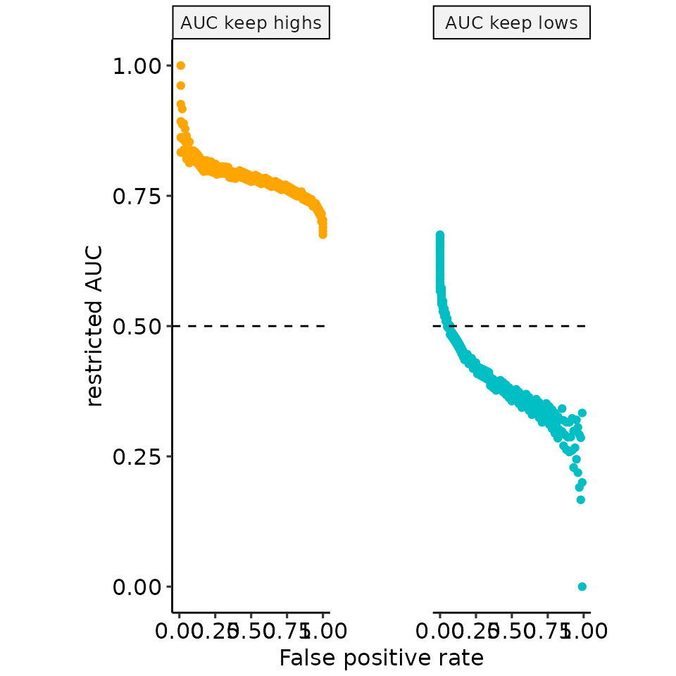

Paper 03: rROC partROCs
paper_03_rROC_partROCs.Rmd
library(restrictedROC)
library(dplyr)
#>
#> Attaching package: 'dplyr'
#> The following objects are masked from 'package:stats':
#>
#> filter, lag
#> The following objects are masked from 'package:base':
#>
#> intersect, setdiff, setequal, union
library(ggplot2)
dir.create("res/paper", recursive = TRUE)
#> Warning in dir.create("res/paper", recursive = TRUE): 'res/paper' already
#> exists
n_positives <- 100
n_negatives <- 100
tmp <- plot_rROC_theoretical(
qnorm_positive = function(x) qnorm(x, mean = 6, sd = 2),
qnorm_negative = function(x) qnorm(x, mean = 5, sd = 1),
n_positive = n_positives,
n_negative = n_negatives,
return_all = TRUE
)
plot_roc_full <- restrictedROC:::plot_ROC(tmp[["rroc"]][["single_rROC"]])
plot_density <- restrictedROC:::plot_density_empirical(tmp[["data"]], length.out = 500)
rz_cols <- restrictedROC:::default_part_colors
auc_cols <- restrictedROC:::default_part_colors
rzauc_cols <- restrictedROC:::default_part_colors
names(rz_cols) <- c("high" = "Keep highs", "low" = "Keep lows")[names(rz_cols)]
names(auc_cols) <- c("high" = "AUC keep highs", "low" = "AUC keep lows")[names(auc_cols)]
names(rzauc_cols) <- c("high" = "rzAUC keep highs", "low" = "rzAUC keep lows")[names(rzauc_cols)]
tmp_perf <- tmp[["rroc"]][["single_rROC"]][["performances"]]
plots_aucs <- tmp_perf %>%
tidyr::pivot_longer(
cols = c("auc_low", "auc_high")
) %>%
dplyr::mutate(name = ifelse(name == "auc_low", "AUC keep lows", "AUC keep highs")) %>%
ggplot(aes(x = fpr_global, y = value, col = name)) +
geom_point() +
ggpubr::theme_pubr() +
facet_grid(. ~ name) +
theme(legend.position = "none") +
geom_hline(yintercept = 0.5, linetype = "dashed") +
ylab("restricted AUC") +
xlab("False positive rate") +
scale_color_manual(values = auc_cols)
plots_rzaucs <- tmp_perf %>%
tidyr::pivot_longer(
cols = c("rzAUC_high", "rzAUC_low")
) %>%
dplyr::mutate(name = ifelse(name == "rzAUC_low", "rzAUC keep lows", "rzAUC keep highs")) %>%
ggplot(aes(x = fpr_global, y = value, col = name)) +
geom_point() +
ggpubr::theme_pubr() +
facet_grid(. ~ name) +
theme(legend.position = "none") +
geom_hline(yintercept = 0, linetype = "dashed") +
ylab("restricted standardized AUC") +
xlab("False positive rate") +
scale_color_manual(values = rzauc_cols)
# pdf("res/paper/rROC_posGTneg_posVARGTneg_completeexample.pdf", width = 8, height = 4)
print(plot_density)
a <- plot_rROC_part(
tmp[["rroc"]][["single_rROC"]],
fpr = .68,
include_part_auc_text = FALSE
)
#> Warning in plot_rROC_part_single(x, ...):
#> fpr
#> 0.68
#> not found, using the closest instead:
#> 0.68
b <- plot_rROC_part(
tmp[["rroc"]][["single_rROC"]],
fpr = .15,
include_part_auc_text = FALSE
)
#> Warning in plot_rROC_part_single(x, ...):
#> fpr
#> 0.15
#> not found, using the closest instead:
#> 0.15
print(patchwork::wrap_plots(a[["plotlist"]][["B"]], b[["plotlist"]][["B"]]))
print(plots_aucs +
theme(
panel.spacing = unit(3.8, "lines"),
plot.margin = unit(c(1, 16, 1, 16), "mm")
))
#> Warning: Removed 31 rows containing missing values or values outside the scale range
#> (`geom_point()`).
print(plots_rzaucs +
theme(
panel.spacing = unit(3.8, "lines"),
plot.margin = unit(c(1, 16.2, 1, 19.5), "mm")
))
#> Warning: Removed 31 rows containing missing values or values outside the scale range
#> (`geom_point()`).
print(patchwork::wrap_plots(plot_roc_full, plot_roc_full))
print(plots_aucs +
theme(
panel.spacing = unit(3.7, "lines"),
plot.margin = unit(c(1, 3.6, 1, 3.5), "mm")
))
#> Warning: Removed 31 rows containing missing values or values outside the scale range
#> (`geom_point()`).
print(plots_rzaucs +
theme(
panel.spacing = unit(3.7, "lines"),
plot.margin = unit(c(1, 4, 1, 7.5), "mm")
))
#> Warning: Removed 31 rows containing missing values or values outside the scale range
#> (`geom_point()`).
# dev.off()